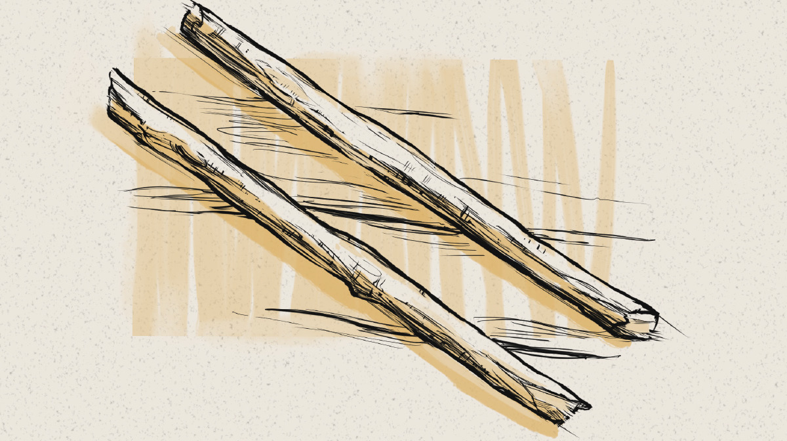

1) Варіант 7 — адаптивне зображення (@media)
Вимога: при max-width: 1200px → 600px, при max-width: 800px → 400px.
2) Варіант 7 — таблиця по центру + псевдокласи
Таблиця центрована, оформлена як у прикладі. Є псевдокласи :hover та :nth-child().
| 2017 | 2018 | 2019 | |
|---|---|---|---|
| ІТех | 93 | 97 | 98 |
| КСх | 91 | 98 | 97 |
| СПО | 96 | 94 | 97 |
3) Додатково: Position + Float (для вимог ЛР2)
Цей блок має
position: relative, а значок справа зверху — position: absolute.
Приклад float: зображення зліва, текст обтікає його справа. Це демонстрація вимоги про float.